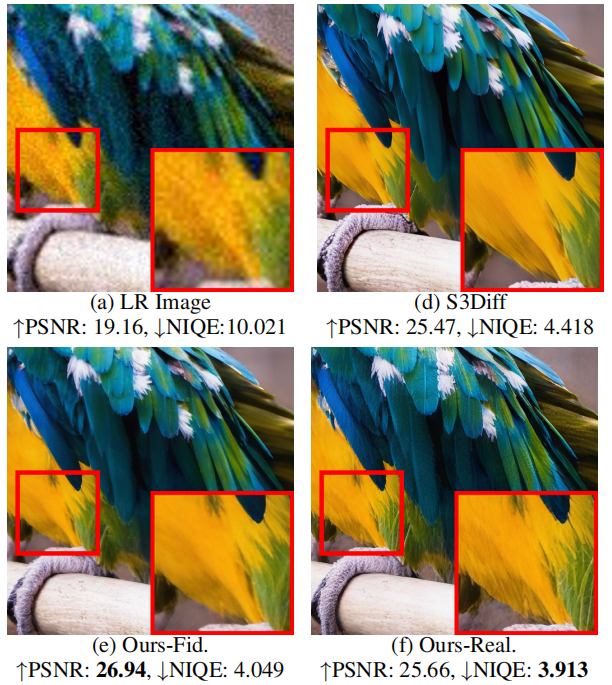
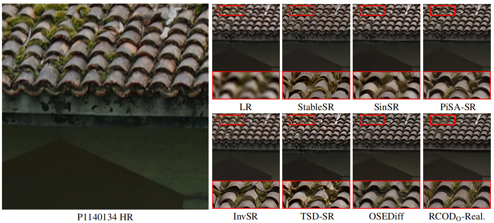

Fig. 1 Realism control one-step diffusion (RCOD) training process. The left part illustrates several synthesized real-world LR images by applying diverse degradations with varying types and intensities on an HR image. (a) Existing vanilla one-step diffusion (OSD) methods for super-resolution (SR): These LR images are directly sent into the diffusion forward and reverse process; the denoising U-Net tends to learn to recover the `average' degradation, leading to a monotonous generation ability within the latent domain. (b) Our proposed Realism Control One-Step Diffusion employs a latent domain grouping strategy. This allows for adaptive control of timesteps (denoising degrees) during the forward process according to the degradation degree in the latent domain. As a result, the denoising U-Net can acquire a more diverse generation capability based on the timestep.
Visual Results
Fidelity-Realism Trade-off Control
Fig. 2 While previous one-step diffusion methods, such as S3Diff, only yield one optimal result, our approach offers the flexibility to control images with different fidelity-realism trade-offs during inference. For instance, our method can generate an image optimized for high **Fidelity (Ours-Fid.)** (PSNR: 26.94) or an image optimized for high **Realism (Ours-Real.)** (NIQE: 3.913), adapting to diverse user requirements.
Qualitative Comparison
Fig. 3 Qualitative comparisons demonstrate that our method consistently achieves superior restoration accuracy and semantic consistency compared to state-of-the-art one-step diffusion methods.
BibTeX
@article{wu2025realism,
title={Realism Control One-step Diffusion for Real-World Image Super-Resolution},
author={Wu, Zongliang and Zheng, Siming and Jiang, Peng-Tao and Yuan, Xin},
journal={arXiv preprint arXiv:2509.10122},
year={2025}
}